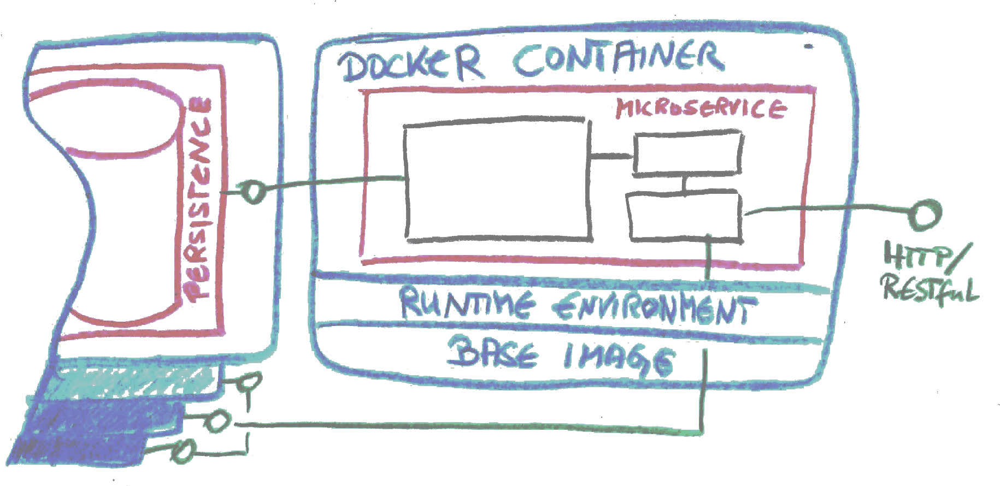

Schlank in den Service:
Der große Java-
Microframework-Test!


Microservice Architektur
Entscheidend: Geringe Komplexität/Aufwand sowie geringe Größe
Java Microframeworks:
„Elegante, flexible auf ein Thema fokussierte Rahmenwerke für eine Problemstellung (in der Regel Webanwendungen) mit dem Ziel einer schlankere Source- und/oder Bytecode-Linie“Die Kandidaten
Eleganter Zündfunken
Datenblatt
Sinatra-inspiriert
Minimaler Boilerplate
Ausdrucksstärke
Standalone (Jetty 9)
Java 8 & Kotlin
zusätzliche Spark-DSL unter Kotlin
2.7.1 (Nov. 2017), APL2
http://sparkjava.com/
 Spark Java
Spark Java
Elegant & Minimalistisch
Sinatra-inspiriert. Deklarativ.
Strukturierung: Routen, Filter, Transformer,
optional Template Engines – That's it!
Jetty 9, slf4j
Spion mit Konventionen
Datenblatt
CoC
MVC
Stateless
Full-Stack
Hibernate, Guice, Jackson,
Flyway, Ehcache, …
Daher nicht wirklich „Micro“
6.2.2 (Jan. 2018), APL2
http://www.ninjaframework.org/
Convention-over-Configuration (CoC)
← Immer: controllers
← Guice Dependency Injection
← Immer: Result
← /GroceryListController/index.ftl.html
← Request Body
geparsed via Content-Type
← URL Parameter
 Ninja
Ninja
Full Stack & MVC
Umfassende Konventionen
Play!-inspired
Client-side Session
daher einfache Skalierbarkeit
Jetty 9, Guice, Guava, Logback, Jackson,
Woodstox, 6x commons-*, joda-time, ehcache,
memcached, flyway, freemarker, hibernate, prettytime, slf4j
Sehr umfassend.
Kombiniert viele etablierte Frameworks.
Architektur sehr stark vorgegeben. Wenig Flexibilität / Modularität
Umgehen von Detailproblemen durch monolithischen Ansatz teils schwer
Von Verbreitung eher Nische gegenüber Dropwizard/Spring Boot/Play!
Floppytaugliches Baukastensystem
Datenblatt
Komplettes
Baukastensystem
an Mikro-Frameworks & Tools (!)
IoC, AOP,
Bean-Validation,
SQL/OR-Mapper,
HTML Parser, …
Einzeln einbindbar
Alles zusammen: 1,7MB
4.2.0 (März 2018), APL2
https://jodd.org/
Jodd Komponenten (Auszug)
Und noch einiges mehr in nur 1,7MB!
(Validierung, HTTP, Utils, CSS, …)
Jodd (Madvoc)
Ausgeprägt
Leichtgewichtig / Modular / KISS
Trotz 1,7MB weit mehr als nur Web-Framework. Geringe Verbreitung.
nichts!
Große Breite
bei geringer Größe & Einfachheit.
Microframework at it's best!
Öfters Breaking changes. Engagierter Maintainer – aktuell aber in der Sinnkrise
In komplexeren Fällen ggf. Rückgriff auf umfassendere Lösungen notwendig
Reaktiver Entertainer
Datenblatt
Reaktiv, Asynchron
Event-basiert,
stark typisiert
hohe Ähnlichkeit mit Vert.X
Basis:
Java 8, Netty & Promises
Zahlreiche Module:
Guice, Groovy, Jackson, Redis, Hystrix, Templating
1.5.3 (März 2018), APL2
https://ratpack.io/
 Ratpack
Ratpack
Asynchron
non-blocking
reaktiv
Netty, Jackson, Javassist, SnakeYaml, slf4j
Interessanter Ansatz & Konzept
Problematisch: viele Lücken in der Dokumentation
Asynchronen Programmierung in Kombination mit vielen Lambda-Ausdrücke begrenzt intuitiv.
Komplexität vs. Gewinn?
Start für den Platzhirsch
Datenblatt
CoC für Spring
= Full-stack
Auswahl an „Starters"
Maven-zentrisch
Ziele
Möglichst viel Autokonfiguration
Standalone Apps
„Opinionated“ Vorlagen
Hier gewählt
Spring 5 mit WebFlux (reaktiv)
2.0.0 (März 2018), APL2
https://projects.spring.io/
 Spring Boot
Spring Boot
Mainstream. Full-stack.
Kein "Micro" – eher ganze Landschaft
Spring Boot, Spring Web/Beans/Core/JCL,
WebFlux, Reactor/ReactiveStreams, Netty
Hibernate Validator, slf4j, SnakeYaml, Logback, Jackson
Viel Automagie.
Hohe Komplexität & Lernkurve
Detailanforderungen können schnell Expertenwissen erfordern
Höchstes Niveau an
Support & Verbreitung
Umfangreiche Dokumentation
Benchmark Crunchdown
(Bytecode Size)
Benchmark Crunchdown
(Request Duration)
Weitere Materialien QR-CODES?
- Pippo (http://www.pippo.ro/)
- Javalite (http://javalite.io/)
- https://github.com/bentolor/
microframeworks-showcase/
Sehr schnell erste Ergebnisse.
Macht Spaß in der Verwendung!
Minimalismus bedeutet aber auch:
Zergliederung, Fehlerbehandlung Antwortseiten in Entwicklerverantwortung
Dokumentation könnte umfassender & gründlicher sein. Code aber gut verständlich & debugbar